Brainstreams — Usability Study & Redesign Proposal for the BC Brain Injury Association
Brainstreams.ca is often the first place someone lands after a brain injury — disoriented, exhausted, and searching for help. I led the visual design and design proposal on a 4-person research team that partnered with the BC Brain Injury Association's executive director to run a three-method evaluation of the site, then translated what survivors and caregivers said into a content architecture and accessibility redesign proposal delivered back to the organization.
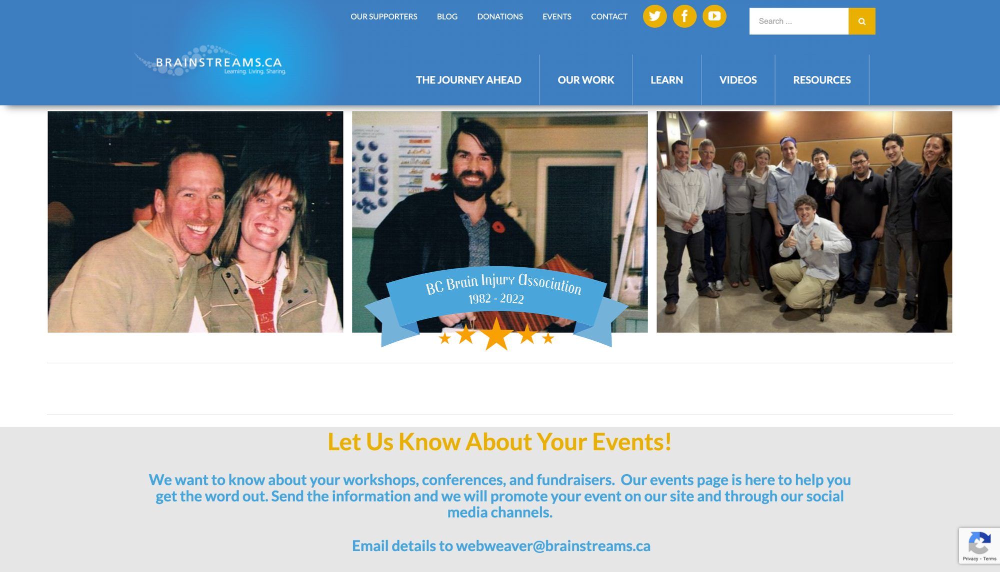
Caption. The Brainstreams.ca homepage, as it existed going into this study.
Long story short
I helped run a survey, a heuristic evaluation, and moderated usability testing with brain injury survivors and caregivers — then proposed a restructured, more accessible Brainstreams
Over six weeks, I worked with a team of four to combine three research methods and understand why a well-intentioned nonprofit resource was failing the very people it was built for. I then led the visual design and authored the redesign proposal — a content architecture, visual system, and language proposal — presented back to the Association's executive director and at SFU's SIAT showcase.
Research
A 13-respondent survey, a Nielsen heuristic evaluation across 4 evaluators, and moderated usability testing with 4 survivors and caregivers, ages 48–78.
Core finding
The site's biggest barrier wasn't a single broken feature — it was a content architecture that buried outdated, unorganized resources under confusing headings.
Redesign proposal
A restructured 6-category navigation, a WCAG-checked color and type system, and plain-language content guidelines — grounded in participants' own words.
Constraint
Every recommendation had to work for a population with a wide range of cognitive ability — while staying inside a 6-week academic timeline with a real, external client.
The Problem
Brainstreams holds genuinely useful information — but its structure asks too much of people who have the least capacity to give it.
Survivors told me the site felt overwhelming, outdated, and hard to search. For participants with cognitive loss, some parts of the site were simply unusable without a caregiver's help — the opposite of what a peer-support resource should require.
The Solution
Restructure the content around how people actually search for help, and rebuild the visual and language system around accessibility, not just aesthetics.
I proposed a simplified navigation, a WCAG-AA-checked color palette, consistent interaction states, and plain-language copy guidelines — all traceable back to a specific research finding.
Context
A peer-education site built by a small nonprofit, for a population it can't afford to lose
The BC Brain Injury Association (BCBIA) runs Brainstreams.ca as a free education and networking hub for brain injury survivors, their families, and caregivers across BC. My team opened the project by interviewing Janelle Breese Biagioni, BCBIA's executive director and the website's manager, to understand its goals and the issues she was already hearing about from users. From that conversation, I helped form six research questions to guide the study:
What is the main goal and purpose of the Brainstreams website?
Who is the primary user group of Brainstreams?
What significant pain points do users experience when navigating the site?
What resources is the primary audience frequently looking for?
What common issues do target users report?
Which specific areas of the site could most benefit from design intervention?
Research approach
Three methods, each narrowing the focus for the next
Rather than jumping straight to usability testing, I let each method inform the next — the survey showed which pages mattered most, the heuristic evaluation gave an expert-eye read on those pages, and the usability study confirmed how real survivors and caregivers actually experienced them.
01 — Initial survey
A short online survey establishing who uses Brainstreams, why, and which pages and resources come up most — used to scope the two methods that followed.
02 — Heuristic evaluation
All 4 team members independently scored the homepage and the Journey Ahead page against Jakob Nielsen's 10 usability heuristics on a 4-point severity scale.
03 — Usability study
Remote, moderated sessions with 4 survivors and caregivers — think-aloud tasks, a semi-structured interview, and pre/post questionnaires, analyzed with affinity mapping.
13
survey respondents
4
heuristic evaluators (myself + 3 teammates)
4
usability study participants
6
weeks, start to final proposal
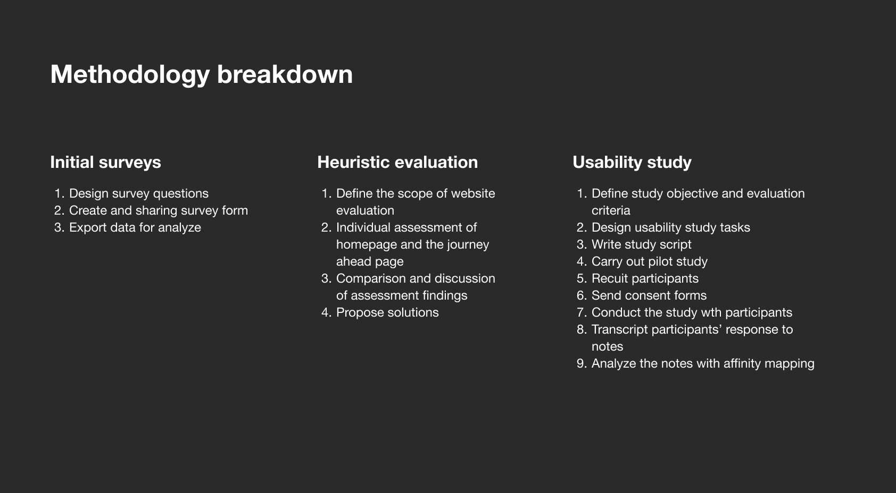
Caption. The three-method structure of the study — each stage narrowed the focus for the next.
Survey findings
People come to Brainstreams for resources — and leave because they can't find them
Finding resources and services, learning about brain injuries, and locating support groups were the most common goals reported. But the same survey surfaced three recurring frustrations that shaped everything downstream: content that felt outdated, an unclear sense of who the site was actually for, and accessibility gaps that went largely unexplained by respondents — a signal that told me to dig deeper with usability testing.
Top challenge — 14 comments
Resources felt outdated, hard to find, and applied a one-size-fits-all approach
In their words
"As a result, many people are left without the help or assistance they need." — a brain injury survivor, on the site's generic resource lists
Second challenge — 2 comments
The target audience was unclear — survivor, caregiver, or professional?
In their words
A family member asked outright whether the site was built for survivors, caregivers, or both — while another respondent assumed it was aimed at industry professionals.
Third challenge — 2 comments
The design itself was inaccessible for some users
In their words
"The whole site can be challenging at times." — a visually impaired survivor. Another respondent noted the colour choices made the site confusing to use.
Heuristic evaluation
Two pages, ten heuristics, one clear pattern
The survey pointed me to the homepage — the first touchpoint for every user — and the Journey Ahead page, which respondents flagged as the site's central resource hub. I independently scored both pages against Nielsen's 10 heuristics on a 0–4 severity scale, alongside three teammates, then compared notes. "Recognition rather than recall" scored worst on the homepage (4/4) — nothing hinted at what lived inside each nav item until you clicked it. "User control and freedom" and "error prevention" scored worst on the Journey Ahead page, largely due to a wall of unlabelled links with no way to filter or preview them.
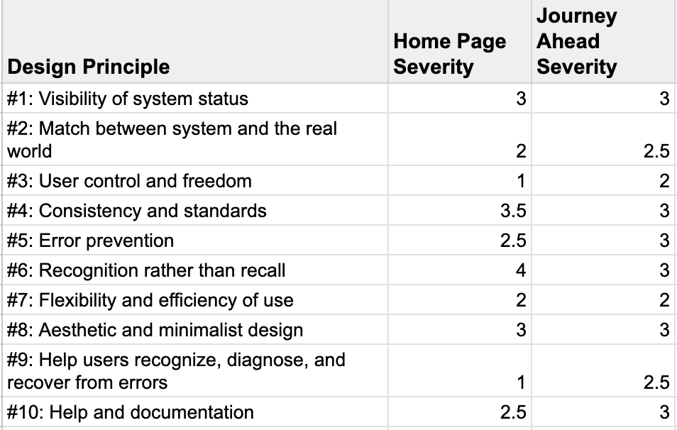
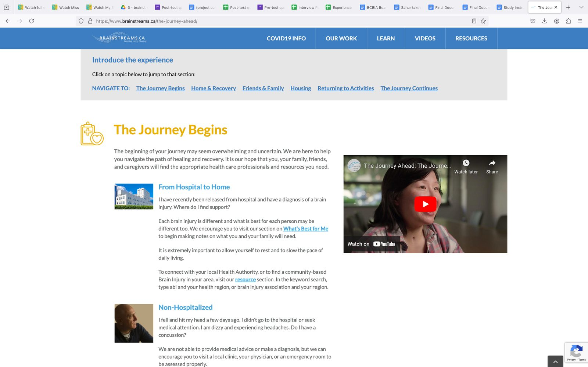
Smaller inconsistencies compounded the bigger ones: hyperlinks didn't change color between their static and hover states, so keyboard and low-vision users had no reliable way to tell what was interactive.
Participants
4 survivors and caregivers, ages 48 to 78
My team recruited specifically among survivors and caregivers rather than a general population, because their lived experience was the only way to judge whether Brainstreams actually met its own goal. Two participants identified as family caregivers; two identified as brain injury survivors, one reporting mild-to-moderate cognitive loss and one reporting moderate-to-moderately-severe cognitive loss — letting me test the site against a realistic range of cognitive ability, not just its best-case user.
Session format
Remote, moderated sessions over video call, ~45–60 minutes each
Why
Several participants had mobility or fatigue considerations — remote testing let them join from home, at their own pace, with a caregiver present if needed.
Structure
7 steps: intro, pre-test questionnaire, 2 think-aloud tasks (with an optional break), post-test questionnaire, follow-up questions
Why
Task 1 captured unprompted first impressions of the homepage; Task 2 asked participants to find 3 relevant resources aloud, surfacing exactly where and why they got stuck.
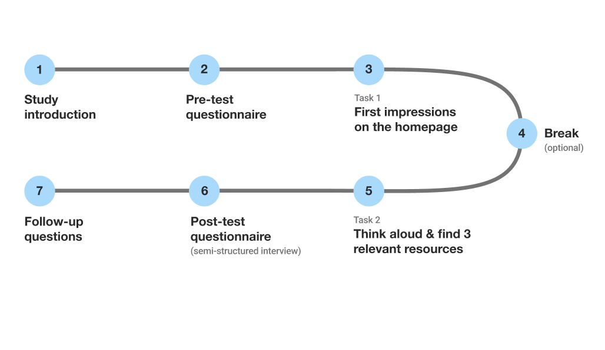
Caption. The 7-step session structure used with each participant.
What people said
The brand felt warm. The content felt like a maze.
Participants consistently liked the visual tone of the site — but that goodwill ran out fast once they had to actually find something. Their comments, gathered through think-aloud tasks and a semi-structured interview, clustered into a pattern I could design directly against.
['Brainstreams'] means nothing to me.
On the site's name and branding
I like the colors — they make me think of summer and happy colours.
On first impressions of the visual design
Exhaustingly long.
On the Journey Ahead resource list
I wouldn't know how to click a video and navigate the website... it would be nice to have some text and symbols to explain the images are interactable.
On unclear interactive states
Four categories from affinity mapping
My team grouped every comment from the think-aloud sessions and interviews into four themes. Three showed up for all four participants; the fourth, branding, was smaller but still worth addressing.
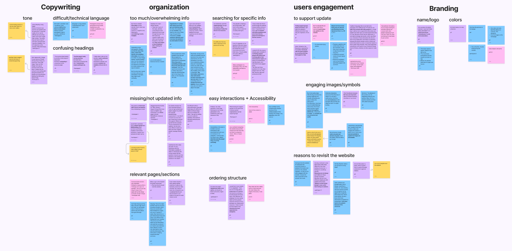
Caption. Affinity diagram of usability study comments, sorted into copywriting, organization, engagement, and branding.
Copywriting
Headings and titles were confusing, and the tone leaned so relentlessly positive that two participants found it unrealistic rather than reassuring.
Organization
A large volume of content with no clear grouping — plus outdated or broken pages — made specific information genuinely hard to locate.
User engagement
Participants had little reason to return after a first visit — content rarely updated, and support groups and stories were hard to reach.
Branding
Visually appealing at a glance, but inconsistent application of color and type quietly undercut how trustworthy the site felt.
Post-test questionnaire
Confidence was high. Accessibility scored lowest of all six measures.
Participants rated six aspects of the site from 1–5. Navigation confidence and visual attractiveness scored highest (M = 4.67, SD = 0.58) — people didn't feel lost, and they liked how the site looked. Accessibility scored lowest (M = 3.0), driven down specifically by the two participants managing cognitive loss, one of whom couldn't complete the tasks without their caregiver's help.
4.67
/5 navigation confidence
4.67
/5 visual attractiveness
3.67
/5 clarity of design & content
3.0
/5 accessibility — the lowest score
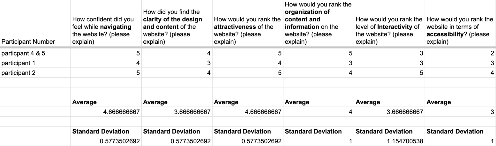
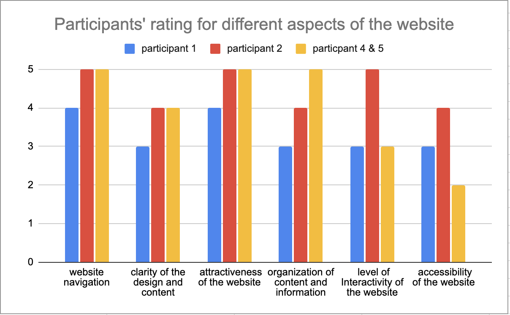
Opportunities
Three research threads, one shared root cause
Copywriting, organization, and accessibility kept surfacing as separate complaints — but they traced back to the same root: a content architecture that was never built to scale, plus a visual system applied inconsistently across pages built at different times.
Restructure the navigation
Regroup the site's content around what users are actually looking for — brain injury info, recovery journey, caregiving, resources, events, about — instead of the current catch-all structure.
Build a consistent, accessible visual system
A single stylesheet with WCAG-checked contrast, clear interactive states, and consistent type hierarchy — so the nav bar behaves the same on every page.
Write for cognitive accessibility
Plainer headings, short descriptions under resource links, and less exaggerated positivity — language that respects where a survivor actually is in recovery.
Redesign 01
Content architecture & navigation
Objective: address the top-ranked pain point from all three methods — that resources are outdated, disorganized, and hard to search — by regrouping the entire nav around real user goals instead of internal site history.
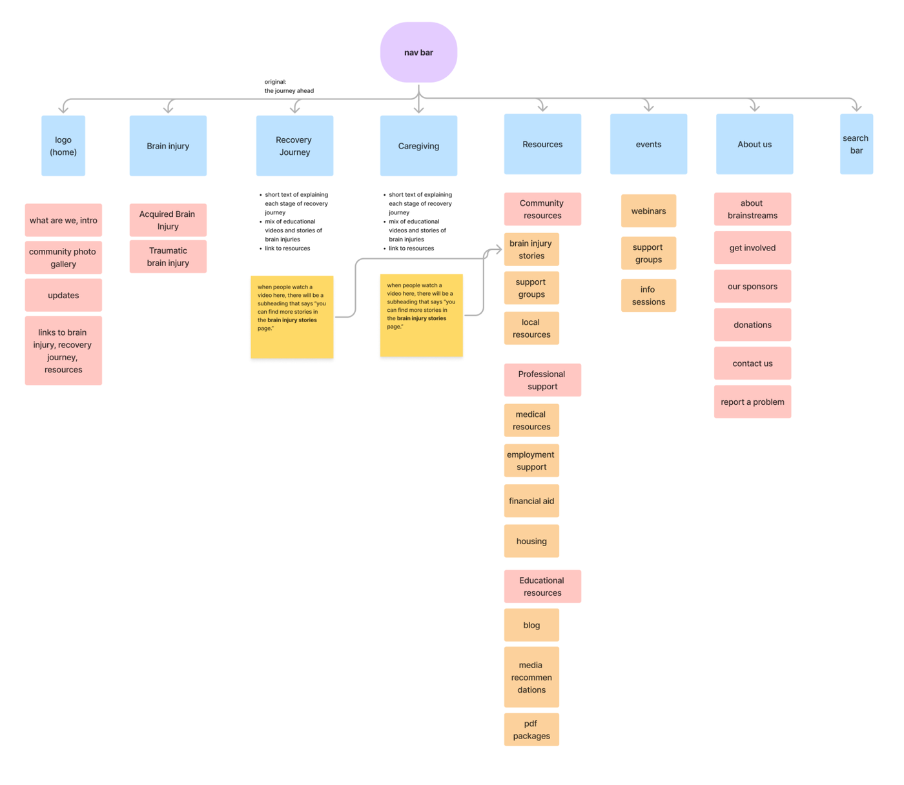
Caption. Proposed site map — 8 top-level categories replacing the original catch-all "Journey Ahead" structure, each grouped around a real user goal.
Caption. Original nav bar — no hover or clicked states, and it changed labels unexpectedly on scroll.
I flagged the missing interaction states in my own evaluation, and so did every teammate independently — recognition rather than recall was the single lowest-scoring heuristic overall.
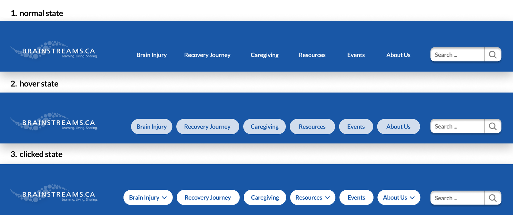
Caption. Redesigned nav bar with distinct normal, hover, and clicked states, using cobalt blue and seashell cream to keep interactivity legible at a glance.
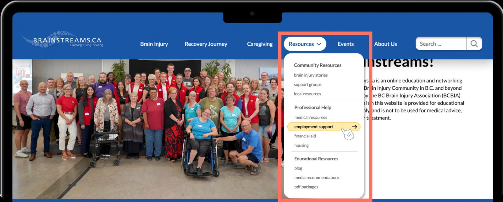
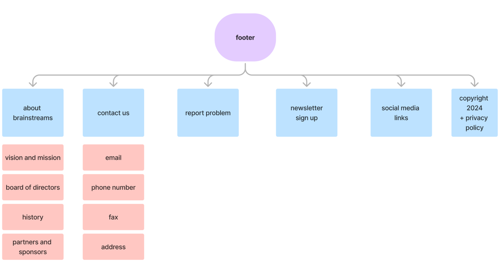
Redesign 02
A consistent, WCAG-checked visual system
Objective: fix the trust and accessibility gaps found in heuristic evaluation and the post-test questionnaire's lowest-scoring measure — by formalizing the site's existing blue-and-yellow identity into a checked, reusable stylesheet.
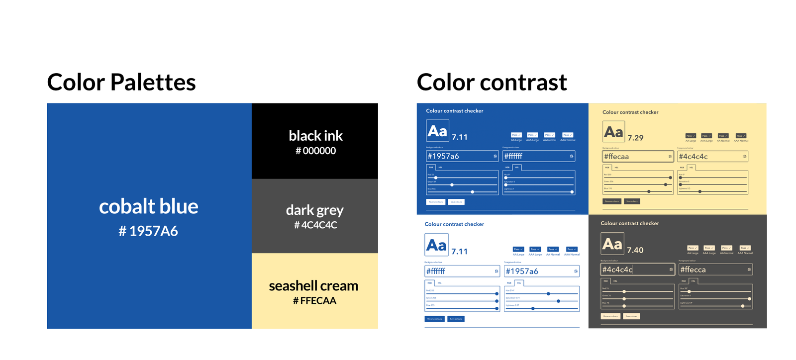
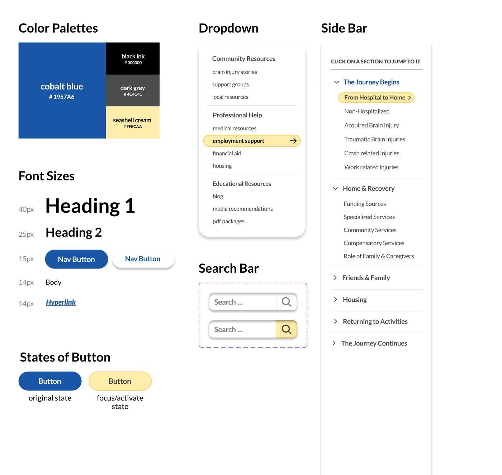
I kept the existing cobalt blue and added seashell cream as a focus/hover color, both passing a 7:1+ contrast ratio — well above the WCAG AA minimum — so the palette stayed recognizably "Brainstreams" while becoming legible for low-vision users.
Redesign 03
Plain language, visual anchors, and a sticky sidebar
Objective: directly answer the participant who said they'd "like to see pictures" but wouldn't know what was clickable — and the participant with cognitive loss who couldn't navigate the page alone.

Caption. Redesigned Recovery Journey page (formerly "Journey Ahead"). 1 — sticky sidebar tracks progress and highlights the current section. 2 — plain-language descriptions preview each link before the click. 3 — a supporting image anchors every section visually.
Sticky sidebar
Replaces the long, flat scroll with a persistent map of the page — the current section stays visible in blue, so users always know where they are.
One image per section
Directly answers the participant who wanted pictures but didn't know how to tell an image was interactive — every section now gets a quick visual anchor.
Plain-language link previews
A one-line description under each resource link — e.g. "a comprehensive guide to help you decide what's best for you" — so users don't click blind.
Renamed sections
"Journey Ahead" becomes "Recovery Journey" — more literal, addressing the naming confusion multiple participants raised on first impression.
Impact
What this could mean for Brainstreams and its users
A site people can search, not just browse
Regrouping resources around real user goals means someone in crisis doesn't have to read the whole site to find the one link they need.
Usable by the full range of the population it serves
WCAG-checked contrast and plain-language content extend usability to survivors with cognitive or visual impairment, not just their caregivers.
Delivered directly to the people who can act on it
My team presented findings and the full proposal to BCBIA's executive director, and again at SFU's SIAT capstone showcase — grounded in real participant recordings and data.
Limitations
Working within real constraints
This was academic research with a real client, real vulnerable participants, and a hard 6-week deadline — all of which shaped what the study could and couldn't confidently claim.
Small sample size
4 usability participants (down from 5, after one withdrawal) is enough to surface strong patterns, but not enough to generalize confidently across BC's full survivor and caregiver population.
Remote testing trade-offs
Remote sessions were kinder to participants with mobility or fatigue limits, but made it harder to observe body language and subtle signs of confusion or fatigue in real time.
Self-selecting participants
Everyone who joined was willing and able to complete a ~1-hour remote study — likely under-representing survivors with more severe cognitive or communication impairments.
Proposal, not shipped product
Recommendations were scoped for a small nonprofit's real capacity — but implementation, further testing, and content migration were outside this project's timeline.
Reflection
Designing for a population you don't share lived experience with
This project asked more of me as a researcher than any prior one. Recruiting and moderating sessions with brain injury survivors meant slowing down, adjusting my script mid-session when a participant needed more time, and being genuinely careful not to mistake "confused by the interface" for "cognitively unable" — two very different problems that call for very different design responses. Working across three methods alongside three teammates also meant constantly reconciling different reads of the same transcript, which made the final findings more defensible, if slower to reach.
If I did this again, I'd push for a small round of testing directly on the Figma prototype before finalizing the proposal — I validated the problems thoroughly, but validated my specific solutions only through internal design review, not with survivors themselves. I'd also advocate for recruiting a slightly larger and more cognitively diverse participant pool from the outset, even if it meant trading some interview depth for broader coverage. What stuck with me most, though, was how much goodwill the organization's mission and existing visual identity had already earned — my job wasn't to reinvent Brainstreams, it was to stop it from getting in its own users' way.